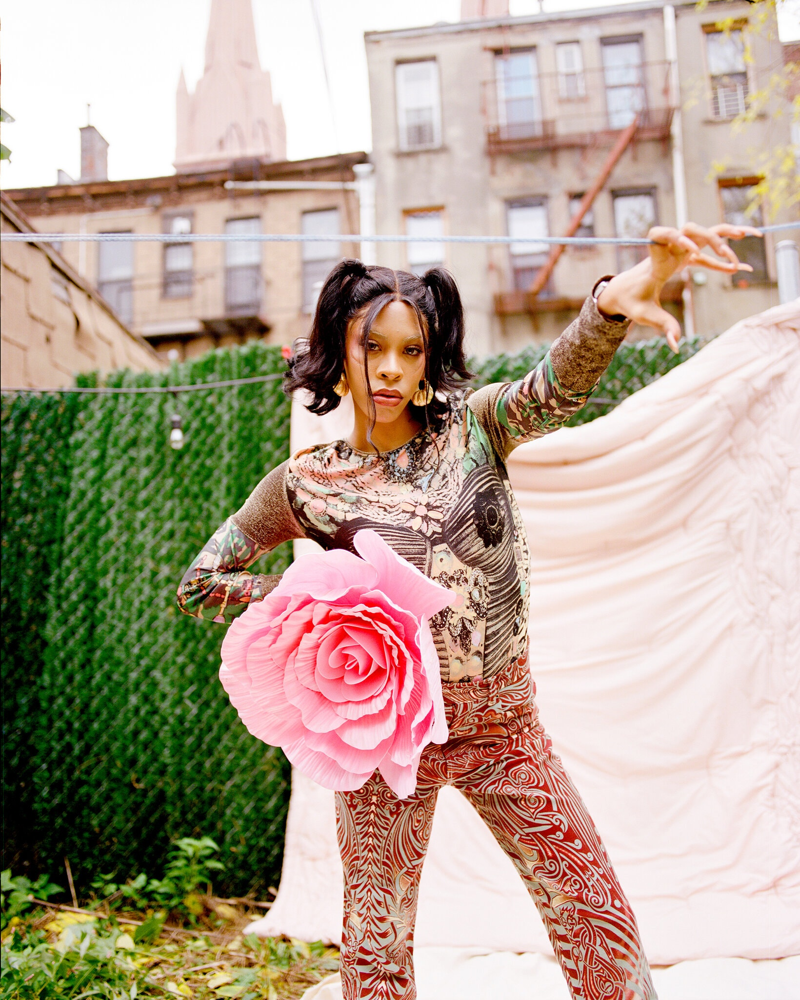

News
How Rico Nasty’s “Nightmare Vacation” Came to Life in Prince George’s County

Image sourced from The Washingtonian
Largo native Rico Nasty released her highly anticipated Nightmare Vacation last week, and it’s full of raw, perfect-for-quarantine lyrics (“if you wanna rage/let it out”) and features collaborations with Gucci Mane, Aminé, and more. It’s a loud album from a skilled, often bedazzled, and fearless rapper who’s impossible to ignore—and loves repping her DC-area roots, too.
That homegrown connection has long influenced Rico Nasty’s work, and she’s proud to be from this area. When she was named to XXL‘s Freshman Class last year—next to Megan thee Stallion and DaBaby—she had an endearingly earnest and teary reaction: “Why did I cry? ’Cause I’m the first girl from the DMV to get XXL. I feel like I’m very happy for my hometown right now. It’s two of us on here. YBN Cordae is from the DMV, too. So, I’m really happy about that. I’m just really happy that my influence is acknowledged. That shit feels good.”
Read More

Image sourced from The New York Times
Can the Mainstream Catch Up to Rico Nasty?
When the rapper Rico Nasty talks about falling in love at first sight, she doesn’t mean with an individual, but with a feeling. She’s talking about her first time on a real stage, and not even as a performer, but as a hanger-on in the wings. Still, that night, everything was moving in dreamy slow motion.
Nasty, now 23, had cautiously started releasing songs on SoundCloud around the time she finished high school in 2015, but she was still bashful about her dreams of becoming a rapper when the upstart teen sensation Lil Yachty invited her to a show.
back then, when she was just Maria Kelly, a teenager from the Palmer Park neighborhood of Prince George’s County, Md., Nasty was a charismatic cutup, and she’d caught Yachty’s attention with her high jinks on Vine and Twitter. But standing up there behind him — “like a groupie, HA-HA!” she recalled recently — as the crowd went insane, something clicked for her.
“I was like, bruh, I want to do this,” she said over Zoom. “Watching how everybody took care of him, I thought, I need to live this life. Like, this needs to be me! I need people to be moving out the way — Rico’s coming through, Rico’s coming to the stage. This is my destiny!”
Read More
Rico Nasty Shares New Song “Magic”: Listen
Rico Nasty is back with a new song. It’s called “Magic,” and it arrives ahead of the rapper’s forthcoming mixtape Rx, due out this summer via Atlantic/Sugar Trap. Check out “Magic” below.
“Magic” was written by Rico Nasty, Vincent van den Ende, Ramon Ginton, Amit Nagra, and Romano Wijnstein. It features production from Avedon, Ginton, Alter Ego, and Mano. In a statement, Rico said she wants the song “to bring out another side of you and almost feel like you’re being taken over by Magic.”
Last year, Rico Nasty released her proper major label debut Nightmare Vacation. Her previous project was Anger Management, made in collaboration with producer Kenny Beats. In a recent conversation hosted by the Recording Academy, Rico Nasty revealed that Dylan Brady of 100 Gecs would be serving as the co-producer of Rx.
Read More